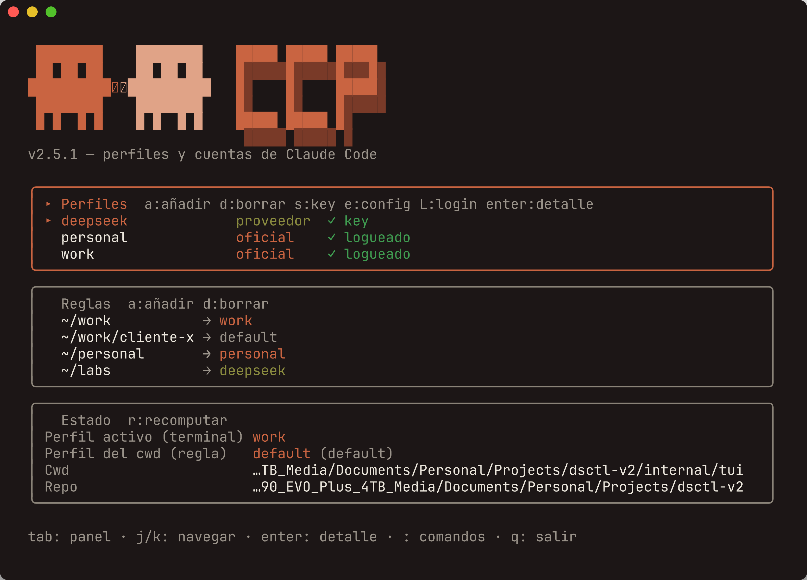
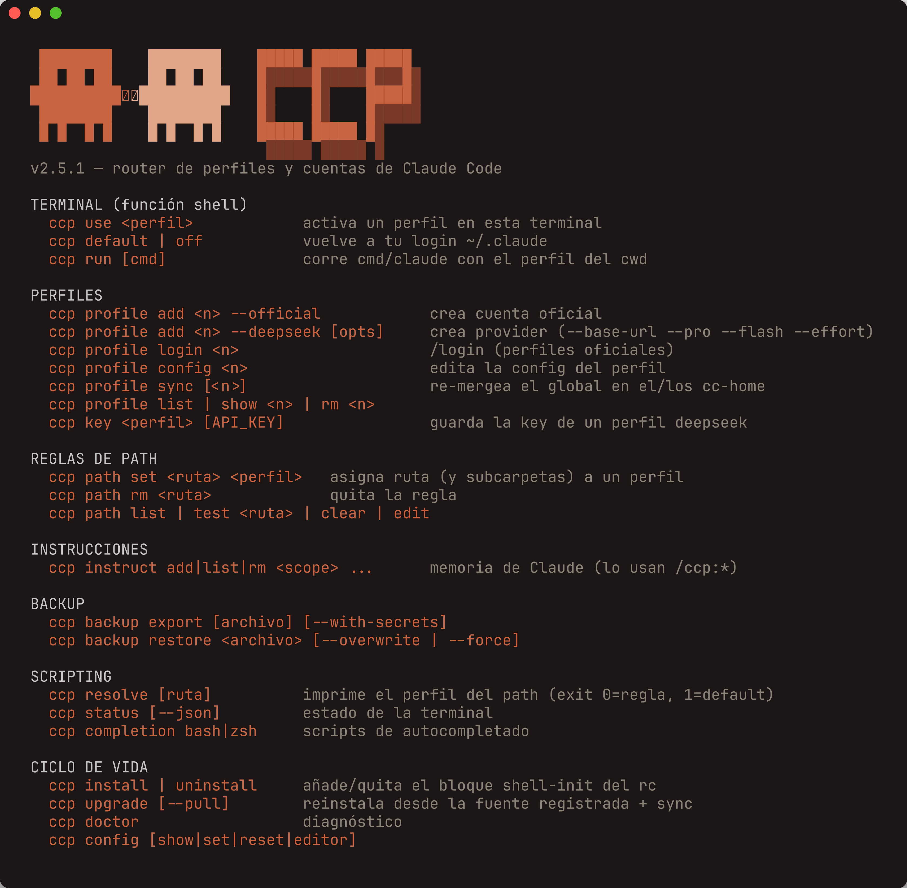

User guidev2.6.1 · Go CLI
ccp_
A different Claude Code account in every folder. In your work repo, your company account; in your personal project, your personal account; in your experiments, DeepSeek. The switch happens on its own, just by cd-ing.

// oficial
Anthropic account
Your company or personal login, each one isolated.
// proveedor
DeepSeek & co.
A compatible endpoint with its own API key.
// default
Your normal login
Your usual ~/.claude. With no rules, this one wins.
The mental model — 30 seconds
- A profile is an identity: an official Anthropic account, a DeepSeek-style provider, or your normal login (default).
- A rule says "this folder (and its subfolders) uses such-and-such profile".
- The most specific rule wins. No rule → your normal login.
When you enter a folder, ccp applies the right profile in that terminal via a hook. Then you run claude as usual.
~/work → perfil "work" # cuenta empresa ~/work/cliente → perfil "default" # carve-out: login normal ~/personal → perfil "personal" # cuenta personal ~/labs → perfil "deepseek" ~ → default
resolves to
why "the deepest one"?
Rules nest. ~/work covers everything inside it, but if a subfolder has its own rule, that one is more specific and rules only there. That way you can have a one-off exception without touching the parent's rule. That's the carve-out from Case 04.
Config inheritance — Claude ↔ profiles
Each profile is an isolated CLAUDE_CONFIG_DIR. ccp builds it by layering your global Claude config with the profile's overlay. Click a layer.
Installation
Five steps. Copy them in order.
Install the binary and the libraries.
./install.sh
~/.local/bin on your PATH. Only if step 1 warned you, add to ~/.zshrc or ~/.bashrc:
export PATH="$HOME/.local/bin:$PATH"
what is the PATH?
The list of folders where your shell looks for commands. If ccp isn't there, the shell can't find it and you'll see command not found.
Install the automatic shell function and hook.
ccp install
why is a function needed?
The binary runs in a child process and can't change your terminal's environment. The shell function can: that's why ccp install adds it to your rc, and it applies the profile with export.
Reload your shell — use YOUR shell's file.
source ~/.zshrc # zsh source ~/.bashrc # bash
Confirm it all went well.
ccp doctor
If you see "Función 'ccp' cargada", you're set.
Your work account in your work folder
The base flow. The other cases are variations on this one.
Create the official profile "work".
ccp profile add work --official
Log in to that profile (just once).
ccp profile login work
Inside Claude Code: type /login, authenticate with your work account, and exit with /quit.
Tell ccp which folder uses "work".
ccp path set ~/work work
Try it: enter and open Claude.
cd ~/work && claude
It starts with your work account. You didn't have to do anything else.
Add your personal account
Same as case 1, with a different name and a different folder.
Create the profile.
ccp profile add personal --official
Log in (once), with your personal account.
ccp profile login personal
Inside: /login with your personal account, then /quit.
Assign your personal folder.
ccp path set ~/personal personal
~/work is still work; ~/personal is now personal.
A folder with DeepSeek
For experiments or work where you'd rather use DeepSeek instead of your Anthropic account.
Create the provider profile.
ccp profile add deepseek --deepseek
Save your DeepSeek API key (it's prompted hidden).
ccp key deepseek
where does the key live?
In ~/.config/ccp/profiles/deepseek/api_key with 600 permissions. It never goes to the YAML, the rc, or git.
Assign the folder.
ccp path set ~/labs deepseek
Use it.
cd ~/labs && claude
Carve a subfolder out of its rule (carve-out)
Your ~/work uses the work account, but there's one specific client where you want your normal login.
A single step — assign that subfolder to the default profile.
ccp path set ~/work/cliente-x default
~/work stays on "work", but ~/work/cliente-x uses your normal login. The most specific subfolder always rules. Want to see it? Go back to the mental-model playground and type ~/work/cliente-x.Switch by hand in a terminal
When you want to change the current terminal's profile without moving out of the folder.
Activate a profile here:
ccp use personal
Go back to your normal login:
ccp default
Run Claude just once with the folder's profile, without making it stick:
ccp run claude
See what's going on
Which profile does this folder use, and what's active in the terminal?
ccp status
What folder rules do I have?
ccp path list
What profiles have I created?
ccp profile list
Is everything fine (logins, keys, shell function)?
ccp doctor
Coming from dsctl (the old version)
ccp replaces dsctl. Migration is automatic.
The first time you run ccp, it migrates on its own: it creates a deepseek profile with your old config and converts your rules. Just use it:
ccp status
Remove the old dsctl block from your shell.
dsctl uninstall
Your old rules are backed up in ~/.config/ccp/rules.dsctl.bak.
Update ccp
From an earlier version to the latest. Your config migrates on its own; you don't lose profiles or rules.
Which version do I have?
Print the binary's version.
ccp version # → 2.6.1ccp --version or ccp -v work too.
Move up to the latest
One command. It reinstalls the binary and re-syncs your profiles.
ccp upgrade
It downloads the release binary for your OS/arch, verifies its sha256, and then regenerates each cc-home. If there's no release but a Go toolchain, it builds from source.
what does it do under the hood?
1. Reads ~/.config/ccp/install-source (the repo path, recorded at install time).
2. Re-runs install.sh from there: detects OS/arch, downloads the binary, verifies the checksum, and removes the old bash libs (~/.local/lib/ccp).
3. Runs ccp profile sync to regenerate each profile's config.
If the shell block got stale, it warns you: run ccp install and reload (source ~/.zshrc).
Variants.
ccp upgrade --pull # git pull en el repo antes de reinstalar ccp upgrade --no-sync # solo el binario, no toca los perfiles
Re-sync without reinstalling
Regenerates each profile's CLAUDE.md + settings.json, re-merging global ⊕ overlay. Useful after changing your global config or a profile's overlay.
ccp profile sync # todos ccp profile sync work # solo uno
It doesn't touch default (it has no overlay or cc-home).
Coming from the legacy version (Bash / dsctl)
Migration is automatic and lazy: the first time you run any ccp command that touches the config, it converts your old state to ccp.yaml (schema v2). You don't have to do anything special.
~/.config/dsctl # config + rules.tsv viejos │ ▼ (automático, una sola vez) ccp (TSV) # profiles.tsv / rules.tsv │ ▼ ~/.config/ccp/ccp.yaml # schema v2, fuente única
ccp backs everything up in ~/.config/ccp/.backup-pre-go-<fecha>. It creates a deepseek profile with your old DeepSeek config (the API key is moved to api_key, chmod 600) and converts your rules: include ones → deepseek, exclude ones → default. It's idempotent: run it as many times as you like, it migrates only once.
Afterwards, remove the old block from your shell — it's in Case 07 · Coming from dsctl.
Export and import your configuration
Take everything to another machine, or back it up before a big change. It all fits in a .tar.gz.
Export
Create a backup (without secrets).
ccp backup export ~/ccp-backup.tar.gz
Includes manifest.yaml, your ccp.yaml and each profile's overlays. The file is left chmod 644.
Include secrets (API keys + official logins).
ccp backup export ~/ccp-backup.tar.gz --with-secrets
api_key and the OAuth credentials of the official profiles (.claude.json). The file is written chmod 600. Keep it somewhere safe and never push it to git.what's in and what's out?
Always: manifest.yaml (with sha256 checksums), ccp.yaml, and each profile's overlay/.
Only with --with-secrets: profiles/<n>/api_key and cc-home/.claude.json.
Never: the symlinks (plugins/ commands/ agents/ skills/). They're recreated on their own when you restore.
Import / restore
Restore on another machine (or over this one).
ccp backup restore ~/ccp-backup.tar.gz
By default: it doesn't overwrite anything. It creates the missing profiles and merges the rules (new paths are added, yours are kept).
Collision modes — what happens to what you already have:
| Command | Existing profiles | Rules |
|---|---|---|
restore | kept; only adds the new ones | merges |
restore --overwrite | replaces the ones that come in the backup | merges |
restore --force | wipes everything and restores clean | replaces all |
ccp saves an automatic snapshot in ~/.config/ccp/.backup-pre-restore-<fecha>. If something goes wrong, your previous state is there. And if the backup comes from a newer ccp (higher schema), the restore aborts without touching anything: update ccp first.Configure by hand (ccp.yaml)
Everything lives in a single file. You can touch it with commands or edit it by hand: both paths lead to the same YAML.
With commands
See the current defaults.
ccp config show
Change a defaults field. Keys: base_url, model_pro, model_flash, effort.
ccp config set model_pro deepseek-reasoner
It only affects the deepseek profiles you create afterwards. Existing ones keep their 4 explicit fields.
Reset the defaults to factory · choose editor.
ccp config reset
ccp config editor nano # o vim, code, etc.The file, annotated
It lives in ~/.config/ccp/ccp.yaml (or $CCP_HOME/ccp.yaml).
version: 2 # schema; no lo bajes a mano defaults: # plantilla para perfiles deepseek NUEVOS base_url: https://api.deepseek.com/anthropic model_pro: deepseek-chat model_flash: deepseek-chat effort: high editor: nano profiles: work: # oficial: solo 'type' type: official personal: type: official deepseek: # proveedor: los 4 campos, explícitos type: deepseek base_url: https://api.deepseek.com/anthropic model_pro: deepseek-chat model_flash: deepseek-chat effort: high rules: # carpeta -> perfil (ruta ABSOLUTA) - path: /Users/tu/work profile: work - path: /Users/tu/work/cliente-x profile: default # carve-out - path: /Users/tu/labs profile: deepseek authored: [] # artefactos que ccp gestiona
official vs deepseek
An official profile stores only type: official; its login lives apart, in cc-home/.claude.json.
A deepseek profile stores the 4 fields (base_url, model_pro, model_flash, effort) explicitly, with no inheritance. defaults only seeds them when it's created.
default is implicit: never put it in profiles. It's your normal login and wins when no rule applies. For an exception, use profile: default in a rule.2. The paths in
rules are absolute and normalized (no ~). Better to let ccp normalize them with ccp path set ~/x perfil.3. The API key does not go here: it lives in
~/.config/ccp/profiles/<n>/api_key (chmod 600). Edit it with ccp key <n>.
is it safe to edit by hand?
Yes. ccp writes atomically (tmp + rename) under a flock, preserves your comments and any unknown key on round-trip.
Version guard: if version is higher than the one your binary knows, ccp refuses to read or write and doesn't touch the file. Update ccp.
After editing by hand: refresh the hook with cd . and verify with ccp status · ccp path list.
Language
ccp speaks English by default and also Spanish. Pick whichever you like; the choice persists in ccp.yaml.
See the current language and where it comes from.
ccp lang # current language + source (env/config/default)Switch language and persist it in ccp.yaml.
ccp lang en # English ccp lang es # Spanish
CCP_LANG=en|es is an environment override and takes precedence over the config. The default is English.2. In the interactive dashboard (TUI), press L to toggle the language live — it persists. Note: login is on the lowercase
l, and L (uppercase) toggles the language.
TUI keyboard shortcuts
The full keymap for the interactive dashboard.
| Key | Action |
|---|---|
j / k (or ↓/↑) | Move the selection |
Tab / Shift+Tab | Switch panel (Profiles / Rules / Status) |
Enter | Toggle detail (Profiles) |
a | Add |
d | Delete |
s | Set key (DeepSeek) |
e | Edit config |
l | Login (official) |
L | Toggle language (EN/ES) |
: | Command bar |
q / Ctrl+C | Quit |
Troubleshooting
Tap a question to see the answer.
+ccp: command not found
~/.local/bin is not on your PATH. Go back to Installation Step 2.
+ccp use … does nothing / "Función 'ccp' no cargada"
The shell function isn't loaded. Run ccp install and then source ~/.zshrc (or ~/.bashrc).
+I changed folders and the profile didn't change
The hook remembers the last folder. After editing rules, refresh with cd .
+Opening Claude says "Not logged in"
That official profile has no session yet. Start it once with ccp profile login <nombre>.
+I want to see a folder's profile without entering it
Use ccp resolve ~/ruta/que/sea
+How do I switch the output language?
Run ccp lang en|es, set CCP_LANG=es, or press L in the interactive dashboard (TUI).
+Does ccp change anything inside Claude Code itself?
No. It only points Claude Code at a per-folder profile (its own config dir / provider). Your accounts and settings are untouched.
+Where are my API keys stored?
Under ~/.config/ccp/profiles/<nombre>/api_key, chmod 600. Never in ccp.yaml, the shell rc, or git.
+How do I update ccp?
Run ccp upgrade — it re-runs the installer and profile sync.
+How do I uninstall?
Run ccp uninstall to remove the shell block; optionally rm -rf ~/.config/ccp to delete config and profiles.
Quick reference
Once you've got the hang of it, this is the whole map.

| I want to… | Command |
|---|---|
| Create an official account | ccp profile add <n> --official |
| Log in to it | ccp profile login <n> |
| Create a DeepSeek provider | ccp profile add <n> --deepseek |
| Save its API key | ccp key <n> |
| Assign folder → profile | ccp path set <ruta> <perfil> |
| Remove a rule | ccp path rm <ruta> |
| See rules / profiles | ccp path list · ccp profile list |
| Switch by hand | ccp use <n> · ccp default |
| Status / diagnostics | ccp status · ccp doctor |
| Full help | ccp help |
ccp resolve [ruta] prints the profile (exit 0 = non-default, 1 = default), and ccp status --json returns a JSON object with active, profile, profile_type, cwd and repo.How does it work under the hood? → CLAUDE.md · source on GitHub
ccp (profiles for Claude Code) is an independent project, not affiliated with, endorsed by, or sponsored by Anthropic or DeepSeek. "Claude" and "Claude Code" are trademarks of Anthropic, PBC; "DeepSeek" is a trademark of its owner — used only to describe interoperability.